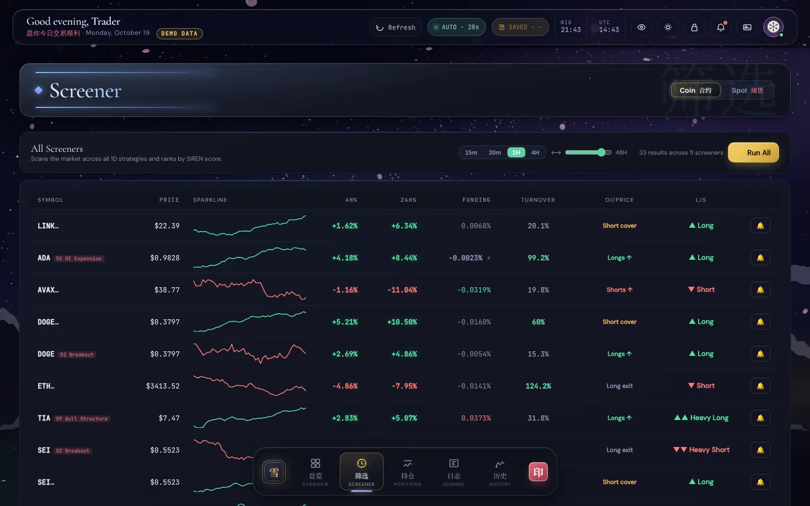
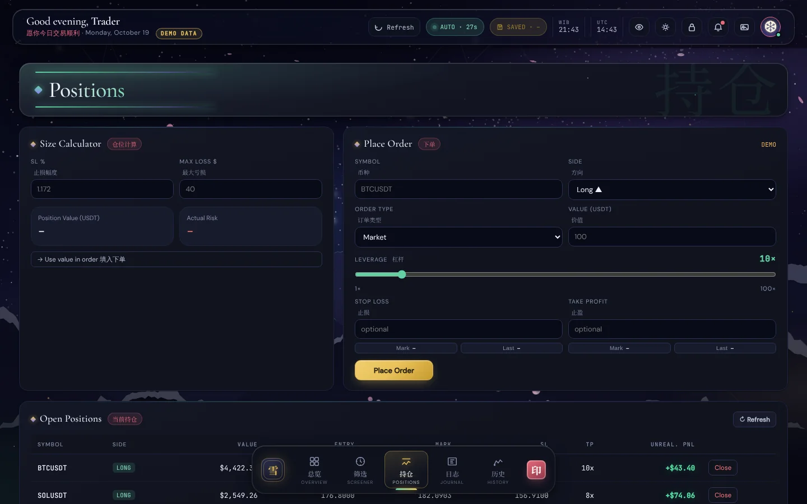
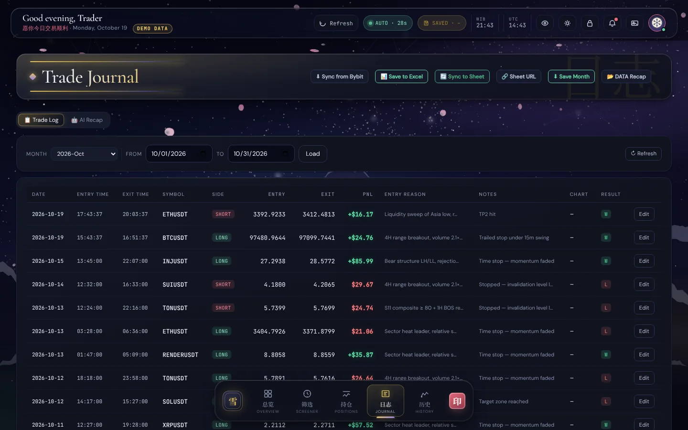
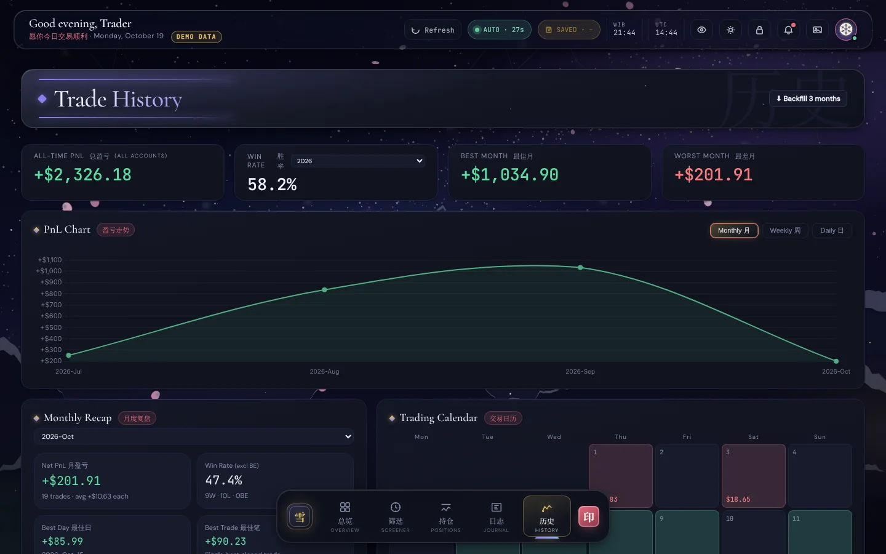

Project 02 · Trading tool · Built with AI
Trading Dashboard
A trading dashboard that runs on my own computer: a market screener, open positions, a journal that fills itself, an AI market chat that only uses live data, and a Risk Guard that watches my limits. It went from V1 to V4.2. One version collapsed, and I rebuilt it under rules I wrote after it broke.
A personal trading cockpit. Market data, a screener, open positions, a trade journal and risk limits sit in one place on my own computer, so decisions follow rules instead of mood.
Six websites open for every session, and the risk limits lived only in my head.
One screen with an 11 strategy screener, positions, an automatic journal, an AI chat that only uses live data, and a Risk Guard.
Version 4.2, in daily use. The code is published with a demo mode that needs no keys.
I started learning markets in July 2025, and by early 2026 I was trading with small positions and studying every day. Every session meant opening an exchange, a screener, a news feed, an economic calendar and a spreadsheet journal, while my risk limits lived only in my head.
Instead of juggling all those websites, I decided to build one dashboard where everything lives together. It was also my first real build with AI. I had just started working with AI agents, and this is where I learned to direct them: through a version that looked great, broke completely, and taught me to write rules before writing code.
Don't just read about it. Try it.
A limited version of the app runs right here, inside this page, on dummy data. Click to start.

Use the left rail to move between Overview, Screener, Positions, Journal and History.
On Screener, press Run All to scan the market with all 11 strategies.
Open Journal and History to see the trade log, the PnL charts and the calendar heatmap.
The parts that matter.
Screener
11 strategies run on every USDT perpetual, including a weighted score: 35% momentum, 30% volatility, 20% volume, 15% RSI band.
AI that cannot invent prices
The market chat only receives live prices and the last 48 hours of headlines, and its instructions forbid citing anything outside that.
Risk Guard
Every 30 seconds it checks equity, the peak and the day's realized PnL against fixed and trailing drawdown limits.
Six tabs open. Zero rules enforced.
Trading crypto futures meant juggling an exchange tab, a screener, a news feed, an economic calendar, a spreadsheet journal and a calculator for position size. The risk limits lived only in my head. The tools that combined all of it were too expensive or did not work the way I needed, so I started building one dashboard on my own computer where the exchange, the journal and the rules live together.
From one plain page to V4.2.
V3 looked beautiful. Every button was dead.
I let design lead. A new stylesheet went on top of the old one, the page was rebuilt with new element IDs, and the JavaScript that made the buttons work was never reconnected. Nothing was written down, so I could not even trace what had changed. V3 was abandoned.
A second stylesheet
2,229 lines on top of 3,500. Two cascades fighting each other.
New page, old script
The script still looked for elements that no longer existed.
No documentation
The working notes still described V2.
I wrote a postmortem. It became the rulebook.
AI writes most of the code. These rules are how I direct it and how I check it. Every one exists because breaking it cost me a version.
One file each
One HTML, one CSS, one JS file. V3 died from splitting.
Never ship unwired HTML
Every button gets its JavaScript in the same change.
Redesign in layers
New styles go on top of the working app. No rebuilds from scratch.
Test on a copy first
Copy the folder, run it on a new port with separate data. Bring back only what is proven.
Verify every change
Syntax checks on every file touched, then a real test in the browser.
List before you change
Before big UI work, list every element ID the script uses. There are 214.
Three flows that keep it honest.
AI that cannot make up prices
- A question comes in: "why is SOL moving?"
- Pull live prices from the exchange.
- Pull headlines from the last 48 hours.
- Prompt = rules + prices + headlines + question, sent to Cerebras, with DeepSeek as the backup.
- The answer may only cite data it was given.
Risk Guard, every 30 seconds
- Read account equity.
- New high? Raise the peak.
- Compute today's realized PnL (Jakarta day).
- Compare static and trailing drawdown to the limits.
- Breach: red bar, sound and one notification per day.
Screener with 11 strategies
- Scan every USDT perpetual.
- Filter by turnover and open interest, drop stablecoins.
- Run 11 strategies: trend, reversion, squeeze, structure and more.
- Add 15m, 30m, 1h and 4h sparklines plus funding flags.
- Cache it, so switching views is instant.
What is still rough, on purpose or on the list.
Before publishing the code I ran a flaw sweep: all 113 API endpoints probed in demo mode, with no keys, no network and broken input, and zero server errors. It still caught 7 real issues, including a monthly Excel backup that had been failing silently. Those are fixed. These remain:
Huge single files
About 6k lines of script and 4.7k of CSS. Easy to keep wired, harder to navigate.
No automated tests yet
Syntax checks and manual passes today. Demo mode makes real tests possible in V5.
One user, PIN only
Built for one person on their own machine, not as a public web app.
Layout rules tied to order
Some grid rules target cards by order. New cards get IDs.
Free data sources
Calendar and sector data run on free quotas. They are cached with backups, but can be stale.
One exchange
Bybit only, and the stop loss triggers on the last price. Support for more exchanges is planned.
In daily use, and still growing.
For the public version I added a demo mode that runs the whole app offline on made up data with no API keys, replaced all artwork with original art generated in code, and documented the architecture, the design system and every lesson above. Next is V5: a cleaner structure and a real test suite.
A closer look.




All screens show demo mode with fictional data. Drag, scroll or use the arrows. Click a screen to enlarge.
Designed and directed by me. Code written with AI.
I don't have a coding background. I learned to build by directing AI: I decide what the tool must do, write the specs and the rules, review every change and test it until it works. Claude and other AI tools write the code.
- Specs and rules written before any code
- Every change checked in the browser before it stays
- Secrets, personal data and real accounts removed before publishing
Clean code, no keys inside.
The repository has the code, a README and notes on how it is built. It contains no API keys, accounts or personal data, and it starts in demo mode with dummy data.